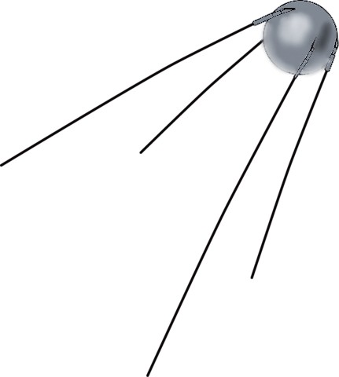
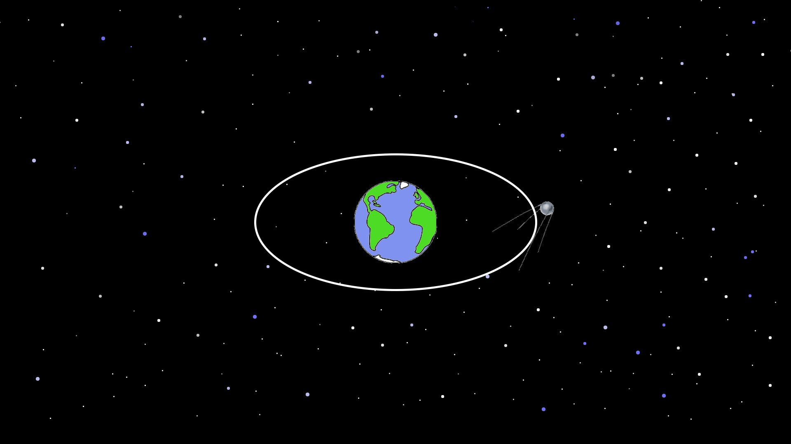

Історія запуску
Супутник-1 був запущений 4 жовтня 1957 року ракетою Р-7. Він став першим штучним супутником Землі, що обертався навколо планети, і ознаменував початок космічної ери. Запуск супутника викликав великий резонанс у світі і започаткував космічні програми багатьох країн.
Технічні характеристики
Основні дані:
- Маса: 83,6 кг
- Діаметр: 58 см
- Довжина антен: 2 м
- Обертання: 1440 разів на добу
- Живлення: батареї, працював 21 день
- Сигнал: радіосигнали на частотах 20,005 та 40,002 МГц
Значення для космонавтики
Супутник-1 довів можливість запуску штучних об’єктів на орбіту Землі, перевірив технології телеметрії та управління, підготував шлях для запуску наступних супутників і космічних кораблів. Ця подія стала відправною точкою розвитку космічних програм СРСР та світу.
